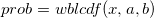
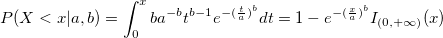
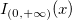
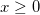

/math-9dd4e461268c8034f5c8564e155c67a6.png "x") using the parameters
using the parameters /math-0cc175b9c0f1b6a831c399e269772661.png "a") and
and /math-92eb5ffee6ae2fec3ad71c777531578f.png "b") .
. computes the low tail Weibull cumulative distribution function for value using the parameters and .
The low tail Weibull cumulative distribution function is defined by: 
where  is the interval on which the Weibull CDF is not zero.
variate., of the required Weibull distribution, must be positive( /math-323c5f97105643bc61e288fe596194ca.png "a>0") )., of the required Weibull distribution, must be positive (
)., of the required Weibull distribution, must be positive ( /math-539fa66a54d60fdbd6278ccebed13ddd.png "b>0") ) .
) .